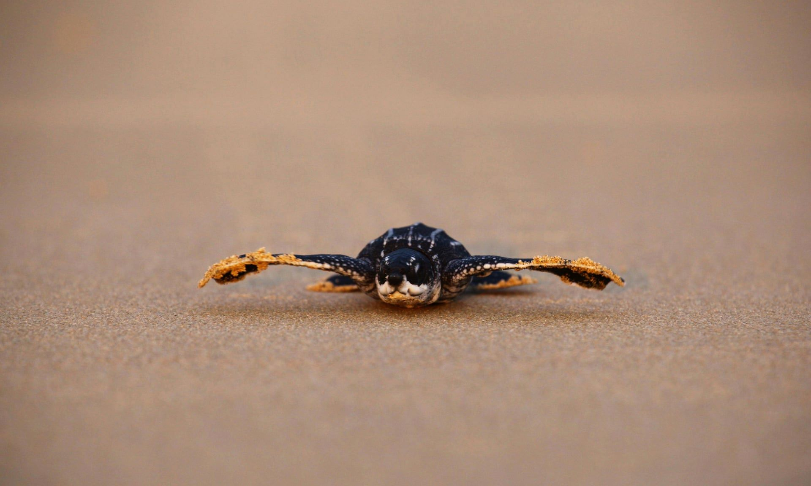

THE GOOD IN EVERYTHING
The coronavirus (COVID-19) has been taking the world by storm in 2020. Hopes were set high for this year, everyone was optimistic. However, the pandemic hit the Earth around early January, originating from Wuhan City, Hubei Province, China. Currently, the disease has killed approximately 234,000 people and has infected more than 3.27 million. Roughly 1.02 million humans have recovered. The virus has had many deleterious effects on the social and economic state of the world. It has lead to the largest global recession in human history placing more than a third of the world population on lockdown. Schools are shut down, the global economy has been greatly affected, social distancing is now a normal routine, stock markets have taken a hit, travelling is restricted, cities are desolate with deafening silence and boredom is consuming the minds of many. COVID-19 has altered nearly every aspect of our daily lives, everything has come to a halt. Despite all these repercussions, some good has come out of this pandemic:- DECREASE IN AIR POLLUTION
- Air pollution in many cities is dropping to unprecedented levels. Places like New Delhi which experience the world’s worst air pollution have recorded a 60% reduction in fine particulate matter. As air pollution greatly plummeted, people posted pictures of pristine skies and Himalayan peaks from places where the heavenly mountains had been shrouded by fog for decades. People all over the world can now breathe fresh, clean and unpolluted air.
New Delhi’s India Gate war memorial on 17 October 2019 and on 8 April 2020.
Photograph: Anushree Fadnavis/Adnan Abidi/Reuters Source: The Guardian - Even in Bhutan, air pollution has fallen significantly due to self-quarantine and apprehension amongst the individuals. And although it is true that some Bhutanese are not taking the precautions required, the majority of us have been prudent and sensible by staying put in our homes, rarely going out. This has tremendously helped in reducing vehicle exhaust emissions and greenhouse gases, thereby decreasing air pollution
- RETURN OF THE WILD
- As people shelter themselves at home, wild animals which usually stay away from urban centres have been running wild and are roaming around these areas. In northern India, a herd of deer was seen walking the streets of Haridwar, and wild boars have been spotted in the centre of Barcelona, Spain.
- GLOBAL WILDLIFE TRADE
- COVID-19 is claimed to have originated from a seafood market selling wild animals illegally in Wuhan, China, putting global wildlife trade in the limelight. Having gained notoriety, people around the world are urging governments to prohibit live animal markets, and stop illegal trafficking and hunting of wild animals.
- Due to the outbreak of the virus, China banned all farming and consumption of live wildlife, which is anticipated to become a law this year.
- OIL PRICES ARE RAPIDLY PLUMMETING
- Oil prices are decreasing at an exponential speed; oil-driven industries are suffering a huge loss because of the outbreak. On the 20th of April, 2020, US oil prices plunged into negative territory for the first time in history as the demand for fossil fuels considerably lessened due to the pandemic as flights have been cancelled, vehicles are used less since people are staying at home, and major sectors of the economy that use a lot energy have shut down. The West Texas Intermediate (WTI), the US benchmark, was priced at $50 before the outbreak, but staggeringly dropped as low as -$40.32 a barrel in a day. Even in Bhutan, the price of fuels has dropped to the lowest in recent months. At the moment, the price of diesel is Nu. 46.313 per litre and Nu. 49.264 per litre for the gasoline prices.
- Although oil supply has not fallen as fast, the demand for it has dropped by 30 million barrels a day indicating that there is far more oil than the world needs.
- There are two scenarios which are very likely to play out in the future: First, oil prices will continue to trade at low prices only if the world economy moves at a slow rate owing to the pandemic. The global oil demand in April had gone down by a third from the year prior, a gap that will be hard to fill. On the other hand, oil prices might recover as the economy resuscitates. However, there’s a possibility that the state of the industry may look different from what it does today since numerous small oil producers will have gone bankrupt and the big dogs will have endured a prolonged period of reduced cash flow.
- The fight against climate change will primarily depend on the decisions that we choose to take in the coming months. Many analysts reckon that we may never consume as much energy from fossil fuels as we did last year. Lower oil prices will make the survival of oil companies very difficult and it will take strenuous efforts from these companies to revitalize.
- If people across the globe start to use less fossil fuels then governments around the world may invest in clean and renewable energy, recognizing the long-term benefits and the grave threat of climate change.
{kind=link}
Dhauladhar mountain range of Himachal, visible after 30 years, from Jalandhar (Punjab) after pollution drops to its lowest level. This is approximately 200 km away.
Photograph: Diksha Walia Source: CNN
Picture of a herd of deer in Haridwar Source: newsflare
Wild goats were also seen strolling around a Welsh town, Llandudno. Videos and pictures show the goats grazing on grass from residential properties and church grounds. Wild goats in Llandudno, Wales.
Photograph: Andrew Stuart Source: World Economic Forum
Rare Fin whales are getting closer to shore in Marseille, France.
Fin whales in Marseille, France. Video: DDTM – ULAM13 Source: The Guardian
Sea turtles are also seen dwelling on beaches in places like Thailand and Florida. A newly hatched leatherback sea turtle makes its way into a sea for the first time at a beach in Phang-nga district, Thailand.

Photograph: Reuters Source: The Guardian
Image of rival gangs of monkeys tussling over food in Lopburi, Thailand also surfaced.

Monkeys in the streets of Lopburi city, Thailand. Photograph: Sasaluk Rattanachai / Facebook Source: Khaosod English
Even in Mumbai, India, the number of flamingos has increased drastically. The birds were spotted chilling around the mudflats of Thane Creek. Flamingos relaxing around the mudflats of Thane Creek.
Photograph: INDRANIL MUKHERJEE/AFP via Getty Images Source: Insider
Image: Wildlife Conservation Society Source: World Economic Forum